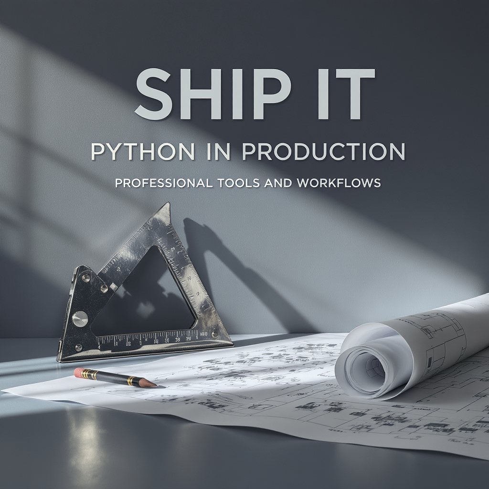

From Zero to Production: A Practical Python Development Pipeline
Preface

The Python ecosystem has grown tremendously over the past decade, bringing with it an explosion of tools, frameworks, and practices. While this rich ecosystem offers powerful capabilities, it often leaves developers—especially those new to Python—feeling overwhelmed by choice paralysis. Which virtual environment tool should I use? How should I format my code? What’s the best way to manage dependencies? How do I set up testing? The questions seem endless.
This guide aims to cut through the noise by presenting a comprehensive, end-to-end development pipeline that strikes a deliberate balance between simplicity and effectiveness. Rather than showcasing every possible tool, we focus on the vital 80/20 solution: the 20% of practices that yield 80% of the benefits.
Whether you’re a beginner taking your first steps beyond basic scripts, an intermediate developer looking to professionalize your workflow, or an educator teaching best practices, this guide provides a clear path forward. We’ll build this pipeline in stages:
- Setting the Foundation: Establishing clean project structure, version control, and basic isolation
- Advancing Your Workflow: Implementing robust dependency management, code quality tools, testing, and type checking
- Documentation and Deployment: Creating documentation and automating workflows with CI/CD
Throughout this journey, we’ll introduce tools and practices that scale with your needs. We’ll start with simpler approaches and progress to more robust solutions, letting you decide when to adopt more advanced techniques based on your project’s complexity. A theme throughout the book is ‘Simple but no Simplistic’.
To help you quickly apply these practices, we’ve created a companion cookiecutter template that automatically sets up a new Python project with the recommended structure and configurations. You can find this template at [GitHub repository URL] and use it to jumpstart your projects with best practices already in place. We’ll discuss how to use and customize this template throughout the guide.
Importantly, this isn’t just about tools—it’s about building habits and workflows that make development more enjoyable and productive. The practices we’ll explore enhance code quality and team collaboration without unnecessary complexity, creating a foundation you can build upon as your skills and projects grow.
The Evolving Python Ecosystem: AI as a Development Partner
The Python development landscape has expanded to include AI-powered tools that enhance developer productivity. These tools - ranging from code completion systems to large language models (LLMs) that can answer complex questions - don’t replace traditional development practices but rather augment them.
As you progress through this guide, you’ll notice references to how AI assistants can support various aspects of the development process. Whether generating boilerplate code, suggesting test cases, or helping troubleshoot complex errors, these tools represent a significant shift in how developers work. While AI assistance brings substantial benefits, it works best when paired with strong fundamentals and critical evaluation - exactly the skills this guide aims to build.
The practices we cover remain essential regardless of whether you use AI tools. Understanding project structure, testing principles, and code quality isn’t obsolete - if anything, these fundamentals become more important as you leverage AI to accelerate your workflow.
Yes, including a paragraph about editors in the main document would be valuable. I suggest adding a section near the beginning of the book (perhaps in the Introduction or early in Part 1) that acknowledges the role of editors in the development process while emphasizing your focus on editor-agnostic practices.
Development Environments and Editor Choice
Throughout this guide, we focus on practices and workflows that remain consistent regardless of your chosen development environment. Whether you prefer a full-featured IDE like PyCharm, a lightweight but extensible editor like VS Code, or keyboard-centric tools like Vim or Emacs, the principles we cover apply universally.
While your choice of editor can significantly impact your productivity, the fundamental aspects of Python development—project structure, version control, dependency management, testing, and deployment—remain consistent across environments. Most modern editors provide integration with the tools we’ll discuss, such as virtual environments, linters, formatters, and testing frameworks. Rather than prescribing specific editor configurations, this guide emphasizes the underlying practices that make for effective Python development.
For readers interested in editor-specific setups, Appendix J provides an overview of popular Python development environments and how they integrate with the tools covered in this book. This appendix includes configuration examples for common editors and tips for maximizing productivity in each environment.
How to Use This Guide
This guide is designed to accommodate different learning styles and experience levels. Depending on your preferences and needs, you might approach this document in different ways:
- Sequential learners can work through Parts 1-3 in order, building their development pipeline step by step
- Practical learners might want to jump straight to Part 4 (the SimpleBot case study) and refer back to earlier sections as needed
- Reference-oriented learners can use the appendices and workflow checklist as their primary resources
- Visual thinkers will find the workflow checklist particularly helpful for understanding the big picture
While this guide focuses on Python, it’s worth noting that many of the core principles and practices discussed—version control, testing, documentation, CI/CD, code quality—apply across software development in general. We’ve chosen to demonstrate these concepts through Python due to its popularity and approachable syntax, but the workflow philosophy transcends any specific language. Developers working in other languages will find much of this guidance transferable to their environments, with adjustments for language-specific tools.
The guide is structured into four main parts, followed by appendices for quick reference:
- Part 1: Setting the Foundation - Covers project structure, version control, and virtual environments
- Part 2: Advancing Your Workflow - Explores dependency management, code quality tools, testing, and type checking
- Part 3: Documentation and Deployment - Discusses documentation options and CI/CD automation
- Part 4: Case Study - Building SimpleBot - Demonstrates applying these practices to a real project
- Appendices - Provide a workflow checklist, tools reference, and glossary of terms
Whether you’re starting your first serious Python project or looking to professionalize an existing workflow, you’ll find relevant guidance throughout. Feel free to focus on the sections most applicable to your current needs and revisit others as your projects evolve.